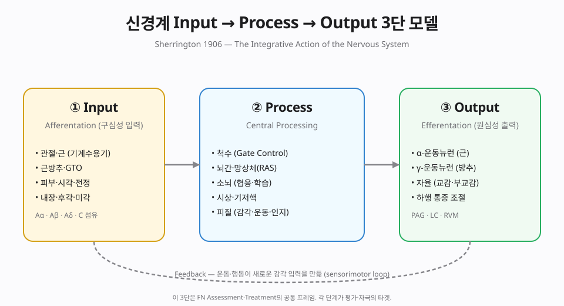
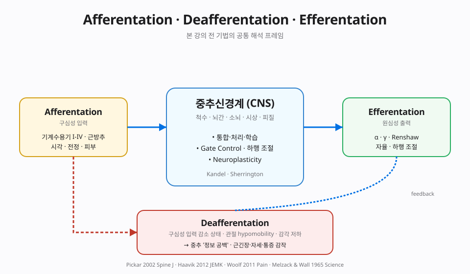
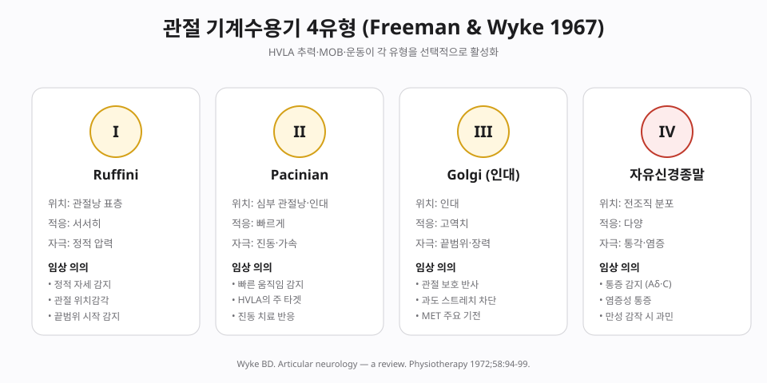
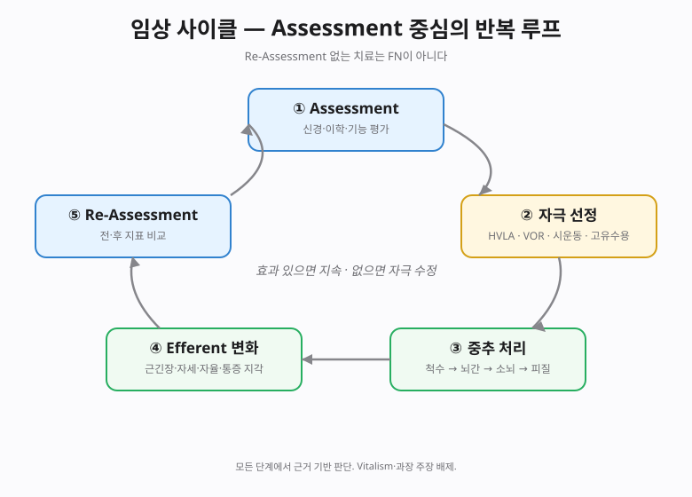
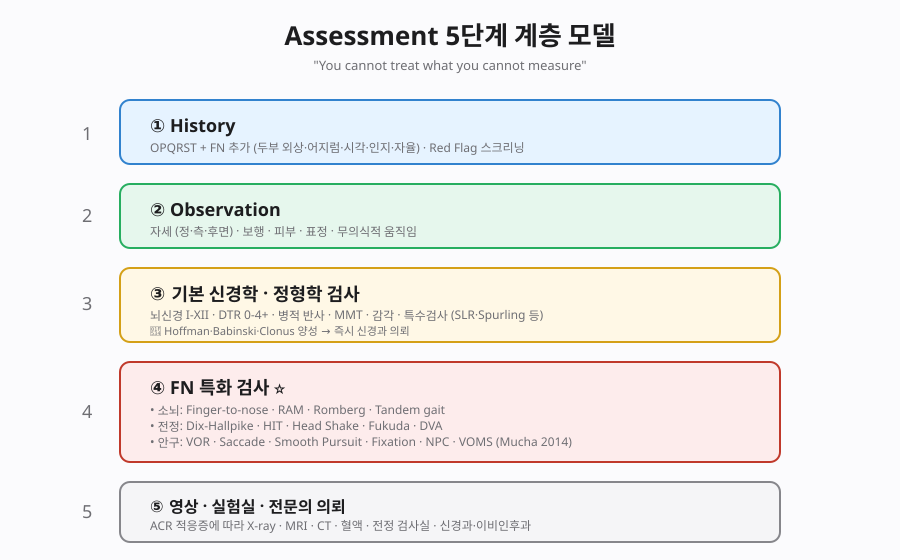
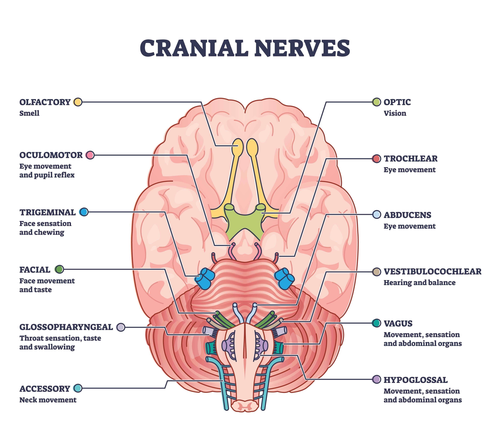
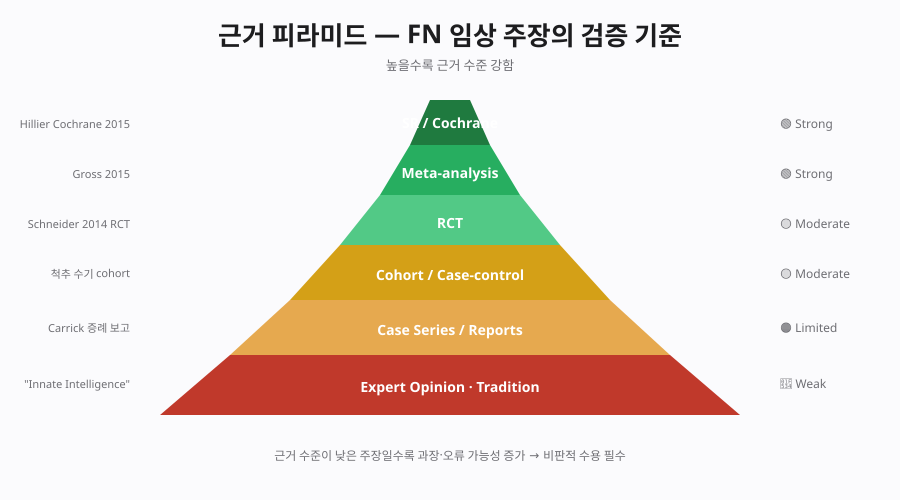

📘 본 강의록의 편집 원칙
Chapter 2는 카이로프랙틱 Functional Neurology(FN)의 이론을 근거 기반 의학(EBM) 관점에서 정리합니다. 신경생리학적으로 확립된 내용은 🟢 포함하고, 과학적 합의를 벗어난 주장은 🔴 비판적으로 명시합니다. Vitalism · "Innate Intelligence" · 측정 불가한 추상 개념은 제외합니다. Carrick FN 커뮤니티의 일부 과장 주장은 Part VIII. 비판적 시각에서 상세히 다룹니다.
Part I. 서론 — Functional Neurology란 무엇인가
본 강의의 조작적 정의
Functional Neurology는 수기·운동·감각 자극이 말초 수용기를 통해 중추신경계에 입력(Afferentation)을 주고, 척수·뇌간·소뇌·피질에서의 처리를 거쳐 원심성 출력(Efferentation)을 조절함으로써, 기계적 근골격 기능장애와 일부 신경학적 증상을 개선할 수 있다는 가설에 기반한 임상 프레임워크다.
이 정의는 Sherrington(1906) 이래 확립된 신경생리학 원리에 부합하며, Vitalism·전신 질환 인과론을 명시적으로 배제합니다.
1.1 전통(임상) 신경학과 기능 신경학의 비교
| 항목 | 임상 신경학 (Mainstream) | 기능 신경학 (FN) |
|---|---|---|
| 초점 | 구조적 병변 진단 | 기능적 상태 평가·조절 |
| 도구 | MRI · CT · EMG · 검사실 | 자세·안구·소뇌·전정 기능 검사 |
| 치료 | 약물·수술·재활 의뢰 | 수기·운동·감각 자극·재활 |
| 근거 수준 | 🟢 Strong (주요 영역) | 🟡 중간~🟠 제한 (중재별 편차) |
| 위상 | 상호 배타 아님 — FN은 임상 신경학의 보완 | |
1.2 역사 요약
- 1970s 후반 — Frederick R. Carrick, DC, PhD의 임상 신경학 기반 교육 시작
- 1979 — Carrick Institute 설립 (Cape Canaveral, Florida)
- 1980s — ACNB (American Chiropractic Neurology Board) 설립, DACNB 자격 인증
- 2000s — 뇌진탕·전정 재활 프로토콜 확장, NFL·NHL 협업
- 2010s — Heidi Haavik 등 PMC 다수 논문으로 기초 과학 근거 축적
- 2017 — Meyer et al. Unravelling Functional Neurology — FN에 대한 체계적 비판 리뷰 발표
1.3 근거 수준의 솔직한 평가
| 영역 | 근거 수준 | 평가 |
|---|---|---|
| 기계수용기·근방추 신경생리 | 🟢 Strong | Sherrington 이래 확립된 기초 |
| 척추 수기의 신경생리 효과 | 🟡 Moderate | Pickar·Haavik 다수 연구 |
| 전정 재활 (말초 전정 기능장애) | 🟢 Strong | Cochrane SR |
| 뇌진탕 vestib/ocular 재활 | 🟡 Moderate | Schneider 2014 RCT |
| 소뇌 자극으로 전신 기능 개선 (광의) | 🟠 Limited | 증례 중심, 일반화 어려움 |
| 단일 교정으로 뇌 기능 재조정 | 🔴 No evidence | 과장 주장 |
| 자극으로 자폐·ADHD·학습장애 치료 | 🔴 No evidence | 근거 부재 |
Part II. 신경계 기초 — 임상 응용을 위한 재정리

2.1 CNS/PNS와 기능적 임상 분류
FN은 신경계를 Input(입력) → Process(처리) → Output(출력)의 3단으로 해석합니다. 각 단계가 Assessment와 Treatment의 타겟입니다.
2.2 소뇌 — FN의 핵심 기관
- 운동 협응·평형·근긴장 조절의 중심
- 전정·시각·고유수용 입력을 통합
- 인지·감정 기능에도 관여 (Schmahmann 1998 — cerebellar cognitive affective syndrome)
- 신경가소성 높음 → 재활 반응 빠름
⚠️ 과장 주의
"소뇌 자극으로 자폐·ADHD·학습장애를 치료한다"는 확장 주장은 근거가 부족합니다. 소뇌 기능 검사 자체와, 이를 이용한 협응·평형 재활은 근거가 있으나, 효능 범위에 대한 과장은 본 강의에서 배제합니다.
2.3 전정계 · 뇌간 · 척수 · 자율신경
상세 내용은 강의록 MD Part II를 참조.
⭐ Part III. Afferentation · Deafferentation · Efferentation
본 강의의 중추 개념 세트. 모든 카이로프랙틱·도수·재활 기법을 이 3개 축으로 해석합니다.

3.1 Afferentation (구심성 입력)
말초 감각 수용기에서 CNS로 전달되는 신경 신호의 흐름. Sherrington(1906) 이래 확립된 개념.
말초 기계수용기 4유형 (Freeman & Wyke, 1967)

| Type | 명칭 | 위치 | 적응 | 임상 의의 |
|---|---|---|---|---|
| I | Ruffini | 관절낭 표층 | 서서히 | 정적 자세·위치감각 |
| II | Pacinian | 심부 관절낭·인대 | 빠르게 | 가속·진동 |
| III | Golgi 인대 | 인대 | 고역치 | 관절 끝범위·장력 |
| IV | 자유신경종말 | 전조직 | 다양 | 통각·염증 감지 |
🔵 임상 해석
HVLA 추력은 주로 Type I·II·III를 활성화시키며, 이 입력이 척수·소뇌·피질로 전달되어 근긴장·통증·자세 조절을 즉시 변화시킵니다. Wyke BD. Articular neurology — a review. Physiotherapy 1972;58:94-99.
3.2 Deafferentation (구심성 입력 감소)
구심성 입력이 감소·결손된 상태. 해부학적 단절부터 기능적 감소(관절 hypomobility로 mechanoreceptor 입력 저하)까지 스펙트럼.
- 관절 저운동성 → Type I/II/III 기계수용기 침묵 → 중추 처리 '정보 공백'
- 만성 통증에서 중추 감작(central sensitization)과 감각 지도 재조직 동반
- 임상 결과: 근긴장 이상·자세 편위·고유수용 오류·통증 감작·운동 조절 저하
🔵 근거 인용
Pickar JG. Neurophysiological effects of spinal manipulation. Spine J 2002;2(5):357-371.
Woolf CJ. Central sensitization. Pain 2011;152(3S):S2-S15.
Haavik H, Murphy B. The role of spinal manipulation in addressing disordered sensorimotor integration. J Electromyogr Kinesiol 2012;22(5):768-776.
3.3 Efferentation (원심성 출력)
- α-운동뉴런: extrafusal 근 수축
- γ-운동뉴런: intrafusal (근방추 감도) 조절 → 근긴장의 중추 조절 메커니즘
- Renshaw cell: α-운동뉴런 귀환 억제
- 자율신경: 교감·부교감 균형 (HRV로 대리 평가)
- 중추 하행 조절: PAG·청반·RVM → 척수 후각 → 내인성 통증 억제
3.4 임상 사이클

⭐ Part IV. Assessment — 기능 신경학 임상의 근간
Assessment가 왜 가장 중요한가
- 치료 타겟 결정 — 어떤 afferent 경로가 저하되었는가
- 효과 측정의 기준선 — 전·후 비교 가능
- 의학적 Red Flag 배제 — 수기·자극이 부적절한 상태 차단
- 환자·동료 소통의 근거 — 주관적 호소가 아닌 객관적 지표
- 근거 기반 실천의 기초 — Assessment가 근거 중심이어야 Treatment도 근거 중심
"You cannot treat what you cannot measure."
4.1 평가의 5단계 계층 모델

4.2 병력 청취 — OPQRST + FN 추가
- 기본: Onset · Provocation/Palliation · Quality · Radiation · Severity · Timing
- FN 추가: 두부 외상력 · 어지럼·평형 · 시각·청각 · 인지·수면 · 자율 증상
🔴 Red Flag — 즉시 응급실·신경과 의뢰
- 생애 최악의 두통·thunderclap
- 의식 저하·혼동·국소 신경학적 결손
- 진행성 약화·감각 저하
- 배뇨·배변 장애·saddle anesthesia
- 최근 경부 외상 후 어지럼·두통 (VAD 가능성)
- 발열 + 경부 경직
4.3 기본 신경학 검사
- 뇌신경 I-XII (냄새·시력·안구운동·안면·청력·연하·혀)
- DTR 0-4+ · 병적 반사(Hoffman·Babinski·Clonus)
- MMT 0-5 · 감각(촉각·진동·위치감각) · 협응
4.3.1 12 뇌신경(Cranial Nerves) 검사 부위 요약
12개의 뇌신경은 후각·시각·안구운동·안면 감각/운동·청각·평형·연하·발성·혀 운동을 담당합니다. 외래 진료실에서 펜라이트 · 면봉 · 청각 자극(손가락 비빔) · 설압자만 있으면 전(全) 뇌신경을 5-10분 내에 스크리닝할 수 있습니다.

⚠ 도식 라벨 정정: HYPOGLOSSAL(XII)의 기능은 그림에 적힌 "Movement, sensation and abdominal organs"가 아니라 "Tongue movement(혀 운동)"입니다 — 원도판이 VAGUS 설명을 중복 표기한 오류. 표에 올바르게 정리.
12 뇌신경 임상 검사법 — 빠른 참조
| # | 뇌신경 (한글) | 기능 분류 | 주 기능 | 임상 검사법 | + Finding이 시사하는 병변 |
|---|---|---|---|---|---|
| I | Olfactory (후각신경) | SVA (감각·후각) | 냄새 | 한쪽 코를 막고 커피·계피·바닐라 등 비자극성 향료. 좌우 별도. (암모니아·박하 등 CN V 자극성 ❌) | 편측 후각소실 → 전두엽·후각구 종양·두부 외상(cribriform plate fracture) |
| II | Optic (시신경) | SSA (감각·특수) | 시각 | 시력(Snellen) · 시야(confrontation) · 안저경(papilledema) · RAPD(swinging flashlight) | 시신경염·시야결손(반맹·1/4맹) · papilledema = 두개내압 상승 |
| III | Oculomotor (동안신경) | GSE+GVE | 안구 운동(MR·SR·IR·IO·LPS) + 동공수축·조절 | H-pattern 추적 · 안검하수 관찰 · 대광반사(직접·간접) · 조절반사 | "Down & Out" + 산동·안검하수 → 후교통동맥류·뇌탈출(uncal herniation, 응급) |
| IV | Trochlear (활차신경) | GSE | 안구 운동(SO) — 내하방 시선 | 내전 상태에서 아래로 내리기 · 머리 기울임(head tilt) 보상 관찰 | 수직 복시·계단 내려갈 때 어지럼 · 머리 외상 후 흔함(가장 가는 뇌신경) |
| V | Trigeminal (삼차신경) | GSA + SVE | 안면 감각(V1·V2·V3) + 저작근 운동 | 이마·뺨·턱 3 분지별 촉각·통각 · 각막반사(V1+VII) · 저작근(masseter·temporalis) 촉진 · 턱 개구 시 편위 | Trigeminal neuralgia · 각막반사 소실 → CN V/VII 또는 뇌교 병변 · 턱 편위 = 동측 익돌근 약화 |
| VI | Abducens (외전신경) | GSE | 안구 운동(LR) — 외전 | 좌·우로 끝까지 보기 시 외전 제한 관찰 | 수평 복시 · 양측 CN VI 마비 → 두개내압 상승 의심(가장 긴 주행 → 압력에 취약) |
| VII | Facial (안면신경) | SVE + GVE + SVA | 안면근(표정) + 누선·타액 + 혀 앞 2/3 미각 | 이마 주름·꽉 감기·미소·뺨 부풀리기 · 혀 앞 2/3 단·짠 맛 · 각막반사 efferent | 이마 보존 = 중추성(뇌졸중·UMN), 이마 침범 = 말초성 Bell's palsy/LMN |
| VIII | Vestibulocochlear (전정와우신경) | SSA | 청각 + 평형(SCC·otolith) | 손가락 비빔(finger rub) · Weber/Rinne(음차 512Hz) · VOR · Dix-Hallpike·HIT | 편측 청력 저하·이명 · 어지럼·BPPV·전정신경염·청신경초종(CN V·VII 동반 시) |
| IX | Glossopharyngeal (설인신경) | GVA + SVA + SVE | 인두 감각·혀 뒤 1/3 미각·이하선 + stylopharyngeus | 구개반사(gag reflex, afferent) · 혀 뒤 1/3 쓴맛 · 인두 감각 | 구개반사 afferent 소실(편측) → 동측 IX 또는 연수 병변 |
| X | Vagus (미주신경) | GVE + GVA + SVE + GSA | 인두·후두 운동 · 부교감(심·폐·소화기) · 혀 뒤 1/3 일부 미각 | "아" 발성 시 연구개 거상 좌우 대칭 · 구개반사 efferent · 쉰 목소리·연하 평가 | 연구개가 건측으로 편위 = 환측 CN X 마비 · 후두마비(쉰 목소리·흡인) → 갑상선·종격동 종양 |
| XI | Accessory (부신경) | SVE | SCM + 승모근(상부) | 어깨 들기(shrug) 저항 · 고개 돌리기(SCM, 반대측 회전 저항) | 편측 어깨 처짐·승모근 위축 · 경부 림프절 수술 합병증 |
| XII | Hypoglossal (설하신경) | GSE | 혀 운동 (intrinsic + extrinsic 혀 근육) | 혀 내밀기 — 편위 방향 관찰 · 혀 측방운동 저항 · 혀 위축·섬유속연축(fasciculation) | 혀가 환측으로 편위(동측 LMN 약화) · 위축+섬유속연축 → ALS 의심 · 양측 위축 → 연수 병변 |
기능 분류 약어: SVA · SSA · GSA · GVA · GSE · GVE · SVE.
※ 다발성 뇌신경 동시 마비는 단일 신경 손상보다 뇌간 병변(뇌경색·다발경화증·종양) 또는 해부학적 인접부(cavernous sinus, jugular foramen) 압박을 우선 의심.
⭐ 임상에서 즉시 적용 가능한 FN 3대 Assessment
기능신경학 검사는 수십 가지가 있지만, 외래 진료실에서 특수 장비 없이 5-10분 내에 신뢰성 있게 수행할 수 있는 세 가지가 가장 실용적입니다:
- 4.4 안구 운동 평가 — 뇌간·대뇌피질·전정핵 통합 기능
- 4.5 소뇌 기능 검사 — 측부·반구 소뇌 및 proprioceptive cerebellar loop
- 4.6 전정기관 검사 — Semicircular canal·otolith·VOR 통합
세 검사 모두 펜라이트·메트로놈 앱·평평한 바닥만 있으면 가능하며, 재현성이 좋아 치료 전·후 비교의 기준선으로 활용됩니다.
4.4 안구 운동 평가 (Oculomotor Assessment)
안구 운동은 전두엽·중뇌·뇌교·전정핵·소뇌가 동시에 관여하는 가장 복합적인 신경학적 행동입니다. 각 검사는 특정 신경 회로를 선택적으로 평가하므로, + finding이 어느 구조의 결함을 가리키는지 명확히 알고 있어야 합니다.
4.4.0 안구 운동 뇌신경 해부 — CN III · IV · VI 병변 국소화
6개의 외안근(extraocular muscles)은 3개의 뇌신경이 지배합니다. 어느 눈·어느 방향을 볼 때 움직이지 못하는가를 관찰하면 어느 쪽 · 몇 번 뇌신경이 고장났는지 정확히 국소화할 수 있습니다.
안근 6개의 지배 뇌신경 — 기억법 "LR6 SO4 나머지 3"
| 근육 | 약어 | 뇌신경 | 주 작용 | 보조 작용 |
|---|---|---|---|---|
| Lateral rectus (외직근) | LR | CN VI (Abducens, 외전신경) | 외전(abduction) — 귀 쪽으로 | 없음 (단일 작용) |
| Superior oblique (상사근) | SO | CN IV (Trochlear, 활차신경) | 내하방 시선 depression — 눈을 안쪽으로 모은 상태에서 아래로 | 내회전(intorsion), 외전 |
| Medial rectus (내직근) | MR | CN III (Oculomotor) | 내전(adduction) — 코 쪽 | 없음 |
| Superior rectus (상직근) | SR | CN III (Oculomotor) | 거상 (elevation) — 외전된 상태에서 위 | 내전, 내회전 |
| Inferior rectus (하직근) | IR | CN III (Oculomotor) | 하강 (depression) — 외전된 상태에서 아래 | 내전, 외회전 |
| Inferior oblique (하사근) | IO | CN III (Oculomotor) | 거상 (elevation) — 내전된 상태에서 위 | 외회전, 외전 |
| Levator palpebrae sup. (상안검거근) | LPS | CN III | 눈꺼풀 올림 | — |
| Pupillary sphincter · Ciliary | — | CN III (parasympathetic, Edinger-Westphal) | 동공 수축(miosis), 조절(accommodation) | — |
H-pattern 시야 검사 — 어떤 방향이 어느 근육·어느 뇌신경인가
🔵 9-gaze H-pattern (표준 도식)
↖ ↑ ↗ 우측 주시 좌측 주시
UL U UR (환자의 오른쪽) (환자의 왼쪽)
← → 우안 LR 좌안 MR 우안 MR 좌안 LR
L C R (CN VI) (CN III) (CN III) (CN VI)
↙ ↓ ↘
DL D DR
9개 방향 각각에서 주 작용 근육 · 뇌신경:
| 방향 | 우안 근육 · CN | 좌안 근육 · CN |
|---|---|---|
| ↑ 상방 (Up) | SR / IO · CN III | SR / IO · CN III |
| ↓ 하방 (Down) | IR · CN III | IR · CN III |
| → 우측 (Right) | LR · CN VI | MR · CN III |
| ← 좌측 (Left) | MR · CN III | LR · CN VI |
| ↗ 우상 | SR · CN III | IO · CN III |
| ↘ 우하 | IR · CN III | SO · CN IV |
| ↖ 좌상 | IO · CN III | SR · CN III |
| ↙ 좌하 | SO · CN IV | IR · CN III |
핵심 원리:
• 수평 운동은 CN VI(외전) + 반대쪽 CN III(내전)의 짝으로 이뤄짐
• 수직 운동은 외전 상태에선 SR/IR(CN III), 내전 상태에선 SO(CN IV)/IO(CN III)가 주도
• 따라서 "내전된 눈이 아래로 안 내려간다" = CN IV 마비, "눈이 외전 안 된다" = CN VI 마비, "그 외 거의 다 안 된다" = CN III 마비
🔴 CN III (Oculomotor, 동안신경) 마비 — "Down & Out"
- 핵: 중뇌 superior colliculus 높이 · 적핵 내측
- 지배: MR · SR · IR · IO + LPS(눈꺼풀) + Edinger-Westphal(동공·조절)
- 주행: 중뇌 발(interpeduncular fossa) → 해면정맥동(cavernous sinus) → superior orbital fissure → 안와
- 부교감 섬유가 외곽에 위치 — 압박성 병변(동맥류 등)에 먼저 손상되고, 허혈성(당뇨 vasa nervorum) 병변에서는 동공이 보존됨
② Ptosis (완전 눈꺼풀 처짐, LPS 마비)
③ 산동(mydriasis) + 동공 반사 소실 (complete 병변 시)
④ 조절(accommodation) 상실 — 근거리 독서 불가
⑤ 상·하·내측 주시 모두 불가 · 복시
• 동공 보존(pupil-sparing) → 당뇨·고혈압성 미세혈관성 허혈 — 3개월 내 자연 회복 흔함
• 외상·종양도 가능
② Interpeduncular fossa — 동맥류·종양·외상
③ Cavernous sinus — 종양·감염 (이 경우 CN IV, VI, V1, V2 동반)
④ Superior orbital fissure · 안와첨 — 외상·종양
🔴 CN IV (Trochlear, 활차신경) 마비 — "수직 복시, 머리 기울임"
- 핵: 중뇌 inferior colliculus 높이
- 지배: Superior oblique (SO) 단 하나
- 유일하게 배측(dorsal)에서 뇌간을 탈출하는 뇌신경이며, 유일하게 교차(decussation)한다 → 좌측 CN IV 핵이 우측 SO를 지배
- 두개강 내 주행이 가장 길어 경미한 두부 외상에도 손상되기 쉬움 (가장 흔한 단독 외상성 안구운동 마비)
② 환측 눈이 상대적으로 위에 있음 (hypertropia)
③ 환측 눈을 내전시키면 아래로 못 내려감 (SO 약화 노출)
④ 환측 눈이 정지 상태에서 extorsion (SO의 내회전 작용 상실)
⑤ 보상적 반대 방향으로 머리 기울임 (head tilt away from affected side)
Step 2 좌우 주시 중 어느 방향에서 악화? → 환측이 내전될 때
Step 3 머리 기울임 검사(head tilt) → 환측으로 기울이면 hypertropia 악화, 반대로 기울이면 호전
3-Step 양성이면 활차신경 마비 확정
② 미세혈관성 (당뇨·고혈압)
③ 선천성 (Congenital SO palsy — 환아가 머리 기울이고 촬영된 사진 증거)
④ 중뇌 병변 — 뇌경색·MS — 단독 CN IV 드묾
※ 교차 때문에 병변 측 ≠ 증상 측 — 좌측 핵 병변 → 우측 SO 약화
🔴 CN VI (Abducens, 외전신경) 마비 — "외전 제한, 수평 복시"
- 핵: 뇌교(pons) 바닥 · 제4 뇌실 저면
- 지배: Lateral rectus 단 하나
- 핵 근처에 PPRF (paramedian pontine reticular formation) · 수평 주시 중심 공존
- 두개강 주행이 길어(Dorello canal 통과) 뇌압 상승 시 "false localizing sign"으로 일측·양측 마비 발생
② 정지 위치에서 내사시 (esotropia) — MR의 작용 비대칭
③ 수평 복시 — 환측을 바라볼 때 악화, 반대쪽 볼 때 호전
④ 환자가 환측 방향으로 얼굴 돌림 (face turn) — 복시 회피
② 양측 CN VI 마비 = 뇌압 상승 의심 (가성종양·뇌수종) → 즉시 영상검사
③ CN VI + 같은 쪽 안면마비(CN VII) = Foville/Millard-Gubler 증후군 → 뇌교 하부 병변 (뇌경색·종양)
④ 소아 CN VI 마비 → pontine glioma 배제 필수
② Dorello canal — 뇌압 상승·전이성 종양·감염
③ Cavernous sinus — CN III·IV·V1·V2와 동반 마비
④ Superior orbital fissure · 안와 — 외상·종양
※ 핵 자체 병변은 수평 응시 마비(PPRF 동반)로 양측 눈 동시에 그쪽을 못 보게 됨
⚡ 외래 30초 감별 — "어느 눈·어느 방향이 안 되는가?"
| 환자에게 지시한 방향 | 움직이지 않는 눈 | → 병변 |
|---|---|---|
| 우측 주시 | 우안 (외전 불가) | 우측 CN VI 마비 |
| 우측 주시 | 좌안 (내전 불가) | 좌측 CN III 마비 (MR) 또는 좌측 MLF lesion (INO) |
| 좌하방 주시 (독서 자세) | 우안 (하강 불가) | 우측 CN IV 마비 (내전된 눈의 하강) |
| 우하방 주시 | 좌안 (하강 불가) | 좌측 CN IV 마비 |
| 상방 주시 | 일측 하방 고정 + ptosis + blown pupil | 동측 CN III 완전 마비 (동공 침범) → 🚨 동맥류 |
| 상방 주시 | 일측 하방 + ptosis, 동공 정상 | 동측 CN III 마비 (pupil-sparing) → 허혈성(당뇨) |
| 수평 어느 방향 | 양측 눈 모두 그 쪽 못 봄 | 뇌간 수평 응시 중추(PPRF) 마비 · 양측 CN VI 마비 (뇌압↑) |
| 수평 주시 | 내전 eye + 외전 eye 안진 | MLF lesion (INO) — MS/뇌간경색 |
🧩 동시 마비가 의미하는 병변 위치 (Cavernous Sinus vs Orbital Apex)
- CN III + IV + VI 동시 마비 → Cavernous sinus syndrome (+ V1·V2 감각 이상)
- CN II 동반 (시력 저하) 시 → Orbital apex syndrome (시신경+안구운동 복합)
- CN III + VII 한쪽 동반 → 중뇌 복측 병변 (Weber 증후군 · 반대측 편마비 동반)
- CN VI + 반대측 편마비 → 뇌교 경색 (Millard-Gubler · Foville)
공통 준비물 · 환자 자세 (Oculomotor 세부 검사)
- 펜라이트 또는 검사자 검지손가락 · 작은 표적(빨간 스티커)
- 환자: 앉은 자세, 머리 고정, 안경 제거 권장
- 검사자는 환자 정면, 표적 거리 40-60cm
- 조명: 밝지 않고 고른 실내등 (reflective glare 방지)
4.4.1 Primary Gaze Fixation — 정면 응시 안진
- 환자에게 검사자 코(정면)를 30초간 응시하도록 요청
- Frenzel 안경 또는 penlight로 각막 반사를 관찰 (없으면 육안)
- 안구가 중심에서 벗어나 튀는 움직임(안진)이 있는지 확인
② Vertical 또는 방향이 바뀌는 안진 (fixation에 영향 없음)
③ 중심 응시인데도 안구가 drift 후 corrective saccade 반복
② → 중추성 병변: 뇌간 또는 소뇌의 응시유지 네트워크 손상
③ → Gaze-evoked nystagmus의 변형, brainstem integrator 기능 저하
② Brainstem (Medial longitudinal fasciculus, vestibular nuclei) 또는 cerebellum (flocculus, nodulus)
③ Nucleus prepositus hypoglossi (수평), Interstitial nucleus of Cajal (수직)
4.4.2 Smooth Pursuit — 추종 운동
- 표적을 환자 눈높이 전방 40cm에 위치
- 수평으로 초당 약 20° 속도(1초에 한 뼘 정도, 느리고 일정)로 좌우 20° 범위 이동
- 환자는 머리는 고정, 눈만 표적을 따라가도록 지시
- 수평 3회 → 수직 3회 → 원운동 2회 반복
② 한쪽 방향만 saccadic (좌/우 비대칭)
③ 수직(특히 위) 추종 불가 — downbeat/upbeat 안진 동반
② → 한쪽 대뇌반구 또는 소뇌반구의 추종 네트워크 저하
③ → 중뇌-뇌교 연결의 수직 응시 네트워크 손상
② 동측 소뇌반구 · 반대쪽 두정-후두엽(추종은 동측 인코딩)
③ riMLF, INC (수직 응시 중심) · 중뇌 dorsal midbrain
4.4.3 Saccades — 도약 운동
- 검사자가 양손 검지를 환자 시야 좌·우 30° 지점에 든다
- "왼쪽 손가락", "오른쪽 손가락" 지시로 좌우 번갈아 응시 (10회 이상)
- 수직(위·아래)도 동일하게 수행
- 눈의 latency (반응 시간), accuracy (정확도), velocity (속도)를 관찰
② Hypermetric — 눈이 표적을 지나쳐 되돌아옴
③ Latency 지연 (>200ms) · slow velocity
④ Internuclear ophthalmoplegia (INO) — 내전 장애 + 반대쪽 해리성 안진
② → 소뇌 반구의 motor learning 결손
③ → 주의·의지 단계 (전두엽 또는 기저핵) 저하
④ → 축삭 탈수초 · 혈관 장애 가능
② 소뇌 반구 (dorsal vermis, fastigial nucleus)
③ Frontal eye field (FEF), dorsolateral prefrontal
④ Medial longitudinal fasciculus (MLF) — 다발성경화증·뇌간경색 의심
4.4.4 Vergence / NPC (Near Point of Convergence)
- 표적(펜 끝)을 환자 코 정중선에서 시작, 천천히 눈 쪽으로 이동
- 환자가 "둘로 보인다"고 호소하거나 한쪽 눈이 바깥으로 벗어나는 시점 기록
- 표적~코 거리를 줄자로 측정
- 3회 측정 평균
3회 시행 평균으로 판정 · 반복 시 피로로 악화되면 더 강한 양성
뇌진탕 후 청소년의 69% 이상 (Master 2016)
독서 집중력 저하 · 두통 · 시각 피로 유발
CN III 내직근 (medial rectus) supranuclear 조절
4.4.5 VOR Cancellation & Gaze Stability
- 환자가 자기 엄지를 앞으로 내민다 (표적)
- 머리와 표적을 같은 방향·같은 속도로 좌우·상하 회전 (VORc)
- 검사자는 표적에서 눈이 벗어나는지 관찰
Smooth pursuit 경로 (서로 공유됨)
📋 한 장 요약 Oculomotor Score Sheet
| 검사 | 정상 기준 | 기록 형식 |
|---|---|---|
| Primary gaze | 안진 없음 | N / + (방향·vertical 여부) |
| Smooth pursuit | 부드러움 · 양측 대칭 | N / saccadic L/R |
| Saccade | 정확 착지 · latency < 200ms | N / hypo·hyper · INO |
| NPC | < 6 cm | ___ cm (3회 평균) |
| VOR cancellation | 표적 고정 | N / 이상 |
4.5 소뇌 기능 측정 (Cerebellar Assessment)
소뇌는 운동 조절의 오차 보정기관(comparator)입니다. 협응·균형·근긴장 세 축으로 평가하며, 외래 검사만으로 소뇌 vermis(정중부) vs hemisphere(반구) 구분이 가능합니다. 소뇌 병변은 동측(ipsilateral) 증상을 낸다는 원칙이 핵심입니다.
공통 준비물 · 환자 자세
- 의자·검사 침대 · 맨발 공간 확보 · 가벼운 foam pad (Foam Romberg용)
- 상지 검사는 앉은 자세, 하지·보행 검사는 기립
- 낙상 대비 — 항상 환자 옆·뒤에 검사자 서기
4.5.1 Finger-to-Nose Test (FTN) — 손가락-코 검사
- 환자는 양팔을 어깨 높이로 벌린다
- 검사자 검지를 환자 앞 50cm에 위치
- "제 손가락을 만진 후 자기 코끝을 만지세요" — 양측 각 5회 반복
- 검사자 손가락 위치를 매번 바꿔서 환자가 재계산하도록 유도
- 눈을 뜬 상태·감은 상태 둘 다 수행
② Intention tremor — 목표 도달 직전에 떨림이 커짐
③ 좌우 비대칭 (한쪽만 불안정)
④ 눈 감은 상태에서 현저히 악화
③ → 국소성 병변 (동측)
④ → proprioception 경로도 손상 (후주·lemniscus) — sensory ataxia 겹침
② Dentate nucleus, superior cerebellar peduncle
③ 좌우 비대칭은 반구성 병변의 특징
④ Dorsal column (posterior funiculus), medial lemniscus
4.5.2 Heel-to-Shin Test — 뒤꿈치-정강이 검사
- 환자 앙와위(누운 자세)
- "오른쪽 뒤꿈치를 왼쪽 무릎 위에 놓고 정강이 선을 따라 발목까지 천천히 내려오세요"
- 양측 각 3회
② 무릎 위에 뒤꿈치를 얹을 때 dysmetria (너무 위/아래로 벗어남)
③ 정강이를 내려오는 속도·방향이 불규칙
FTN 정상인데 HTS 이상 → 하지 대표 영역에 국한된 소뇌 병변
Spinocerebellar tract, inferior cerebellar peduncle
4.5.3 Rapid Alternating Movements (RAM) — 빠른 교대 운동
- 한쪽 손바닥을 무릎 위에 놓고 손바닥↔손등을 최대한 빠르게 교대
- 10초간 양측 횟수 카운트
- 추가: 검지로 엄지 반복 탭(finger tap) 10초간
② 10초에 20회 미만 (정상은 양측 ≥ 20회)
③ 좌우 차이 30% 이상
뇌졸중·다발성경화증·소뇌 변성에서 조기 소견
좌우 차이는 병변 측을 직접 지시
Dentate → thalamus → motor cortex 회로
기저핵 병변(Parkinsonism)도 느림 유발
4.5.4 Romberg & Foam Romberg Test — 3단계 균형 검사
- 환자 맨발, 발을 가지런히 붙여 기립, 팔은 측면
- Step 1 눈 뜨고 딱딱한 바닥 30초 — 동요 관찰
- Step 2 눈 감고 딱딱한 바닥 30초 — 동요 증가 여부
- Step 3 Foam 위 + 눈 감고 30초 — proprioception 차단, 전정 의존도 평가
② Step 2 Romberg 양성 (눈 감으면 동요)
③ Step 3 Foam 양성 (foam+눈 감음에서만 동요)
② → 시각이 유일한 균형 지지(고유감각 or 전정 결손)
③ → 고유감각은 정상, 전정 계통 단독 결손
② 후주 (dorsal column), DRG, 말초신경 (감각성 ataxia) 또는 양측 전정
③ 일측성 말초 전정 (미로·전정신경)
4.5.5 Tandem Gait — 일자 보행
- 바닥에 직선(tape·bandage)을 그린다
- 환자가 한 발의 뒤꿈치를 다른 발 발끝에 붙이며 10걸음 전진 · 10걸음 후진
- 팔은 평소처럼 자연스럽게 내림
② 선을 벗어남 · 10걸음 중 2회 이상 실패
③ 균형 잡으려 팔을 크게 벌림 (titubation)
FTN 정상인데 Tandem 양성 → vermis 국소
음주·약물 중독 screening에도 사용
전정척수로 (VSR), reticulospinal system
4.5.6 관찰 — Speech · Posture · Tone
- 환자와 대화하며 "메소디스트 에피스코팔" 3회 반복 등의 shibboleth 발음 평가
- 앉은 자세에서 체간 흔들림(titubation) 관찰
- 팔을 밀었다 놓을 때 rebound 유무 (pendular knee jerk 포함)
② Titubation — 체간이 앞뒤로 리듬있게 흔들림
③ Rebound 부재 — 팔 밀고 놓으면 자신의 얼굴을 칠 정도로 과이동
④ Pendular DTR — 무릎반사가 여러 번 swing
② → 축성 소뇌 기능 실조
③④ → Hypotonia — 근방추 gain 조절 실패
② Anterior vermis
③④ 소뇌 전반 (반구 + 심부핵)
📋 한 장 요약 Cerebellar Score Sheet
| 검사 | 정상 | 기록 |
|---|---|---|
| FTN (우/좌) | 착지 정확 | N / dysmetria (방향) / intention tremor |
| HTS (우/좌) | 직선 주행 | N / zig-zag |
| RAM 10초 | ≥20회 · 대칭 | R __ L __ / 차이 ___% |
| Romberg (3 step) | 각 30초 유지 | S1__ S2__ S3__ |
| Tandem Gait 10걸음 | 선 유지 | N / 실패 __ 회 |
| Speech · Rebound | 정상·rebound 있음 | N / dysarthria / no rebound |
4.6 전정기관 검사 (Vestibular Assessment)
전정계는 3 semicircular canal(수평·전·후)과 2 otolith organ(utricle·saccule)으로 구성되며, VOR(안구)·VSR(척수·자세)·VCR(경부)에 출력합니다. 외래에서는 말초 vs 중추 감별이 가장 중요합니다 — HINTS 프로토콜이 기준.
공통 준비물 · 환자 자세
- 검사 침대(뒤로 기울일 수 있는) · Frenzel 안경(권장) · 초시계 앱
- 경추 제한이 있는 환자는 Side-Lying Dix-Hallpike 대안
- 경추 동맥 증상·심한 경추통 → 위치 검사 전 VBI 스크리닝 필수
4.6.1 Head Impulse Test (HIT · Halmagyi) — VOR 스크리닝
- 환자 앉은 자세, 검사자 정면 1m
- 환자에게 "제 코를 계속 보세요" 지시
- 환자 머리를 양손으로 잡고 중립에서 10-20° 좌 또는 우로 빠르게(high-acceleration thrust) 돌린다
- 환자 눈이 검사자 코에 고정되는지 관찰
- 좌·우 각 3-4회 예측 불가능한 타이밍으로
AVS에서 HIT+/direction-fixed nystagmus/no skew = 말초, HIT−는 중추 (뇌졸중 가능)
(HIT 음성이면 전정핵·소뇌 flocculus 등 중추로 전환)
4.6.2 Dix-Hallpike Maneuver — 후반고리관 BPPV 진단
- 환자 long-sitting, 머리를 검사할 쪽으로 45° 회전
- 검사자가 환자 머리를 양손으로 잡고 빠르게 뒤로 눕힌다 (목은 신전 20°)
- 최소 30-60초 유지, Frenzel 안경으로 안진 관찰
- 다시 앉힘 → 반대쪽 반복
30초 이내 소실 (crescendo-decrescendo)
앉혔을 때 반대 방향 reversal 안진 발생
오탈석(otoconia)이 이석기관에서 떨어져 cupula 아래 쌓임 (canalolithiasis)
→ 바로 Epley maneuver로 치료 가능
※ 지속적 · 방향 고정 · latency 없음 → central positional nystagmus → 4번째 뇌실 주변 중추 의심
4.6.3 Supine Roll Test (Pagnini-McClure) — 수평반고리관 BPPV
- 환자 앙와위, 머리 30° 굴곡 (수평반고리관을 수직으로)
- 머리를 빠르게 한쪽으로 90° 회전 → 30초 관찰
- 중립 복귀 후 반대쪽 수행
② Apogeotropic(위쪽으로 박동) 수평 안진
양측 검사에서 강한 쪽 = 병변 측
② → Cupulolithiasis (cupula에 붙은 이석)
두 경우 각각 치료법이 다름 — BBQ roll (360°), Gufoni maneuver 등
후반고리관 다음으로 흔한 BPPV 형태 (~10-15%)
4.6.4 Head Shake Test — 전정 비대칭 검출
- 환자 눈 감게 하고 Frenzel 안경 착용
- 검사자가 환자 머리를 수평면에서 초당 2회, 20회 흔듦
- 갑자기 멈춘 후 눈 뜨도록 지시 → 안진 유무 관찰
(= 느린 상이 병변 쪽으로)
일측성 말초 전정 결손의 간단한 선별 — 민감도 ~50%, 특이도 ~90%
(빠른 상 = 건측, 느린 상 = 병변 측)
수직 안진이면 중추성 → 신경과 의뢰
4.6.5 Fukuda Stepping Test (Unterberger) — 전정척수 통합
- 환자 눈 감고 양팔을 90° 어깨 앞으로 든다
- 제자리에서 50걸음 high-stepping (무릎을 허리 높이까지)
- 검사자가 회전 각도·전진 거리 측정
환자가 병변 측으로 회전
재현성이 중간 수준이므로 HIT·Head Shake와 조합해 해석
뇌졸중·약물·말초 전정 모두 양성 가능 (비특이적)
Lateral vestibulospinal tract · Descending MLF · 소뇌 vermis
4.6.6 Dynamic Visual Acuity (DVA) — VOR 기능 정량
- 환자가 1.5m 전방 Snellen chart에서 편안한 줄 읽기 → 정적 시력 기록
- 검사자가 환자 머리를 초당 2Hz, 수평으로 흔들며 같은 chart 읽기
- 정적 vs 동적 시력 라인 차이 계산
양측성 전정 기능 저하에 민감도 ~85%
환자 주관 증상: "걸으면서 간판 글씨가 흔들려요" (oscillopsia)
Gentamicin 독성 · 자가면역성 vestibulopathy · Presbyvestibulopathy
🔴 HINTS 프로토콜 — 급성 어지럼 응급 평가 (말초 vs 중추)
급성 어지럼+안진 환자에서 말초성 vs 중추성(뇌졸중) 감별의 골드 스탠다드 — 초기 MRI보다 민감합니다.
| 항목 | 말초 (안심) | 중추 (즉시 응급실) |
|---|---|---|
| HI Head Impulse | Abnormal (catch-up +) | Normal |
| N Nystagmus | Unidirectional (direction-fixed) | Direction-changing / vertical |
| TS Test of Skew (cover test) | Absent | Vertical skew deviation + |
세 중 하나라도 "중추" 양성 → 즉시 응급실 / 뇌졸중 프로토콜
Kattah JC et al. HINTS to Diagnose Stroke in AVS. Stroke 2009.
📋 한 장 요약 Vestibular Score Sheet
| 검사 | 정상 | + Finding / 기록 |
|---|---|---|
| HIT (우/좌) | 눈 고정 유지 | Catch-up saccade → 회전한 쪽 전정 결손 |
| Dix-Hallpike (우/좌) | 안진 없음 | Torsional up-beat, latency __s → 해당 쪽 후반고리관 BPPV |
| Supine Roll (우/좌) | 안진 없음 | Geo/Apogeo → 강한 쪽 수평반고리관 BPPV |
| Head Shake | <3 beats | Fast phase → 건측, 느린 상 → 병변 |
| Fukuda 50 steps | < 30° 회전 | __° (> 45° → 병변 측) |
| DVA 차이 | 0-2 line | __ line (≥3 → 양측 전정병증) |
🔵 핵심 근거 문헌
- Master CL et al. Vision Diagnoses Are Common After Concussion in Adolescents. Clin Pediatr 2016.
- Mucha A et al. A brief vestibular/ocular motor screening (VOMS) assessment. Am J Sports Med 2014;42(10):2479.
- Kattah JC et al. HINTS to diagnose stroke in the acute vestibular syndrome. Stroke 2009;40(11):3504.
- Halmagyi GM et al. The Video Head Impulse Test. Front Neurol 2017;8:258.
- Bhattacharyya N et al. Clinical Practice Guideline: BPPV (Update). Otolaryngol HNS 2017;156(3 Suppl).
- Strupp M, Brandt T. Peripheral vestibular disorders. Curr Opin Neurol 2013.
4.7 자율신경 평가
- Orthostatic Vital Signs (dysautonomia·POTS 선별)
- Heart Rate Variability (HRV)
- Pupillary Light Reflex · Valsalva Ratio
4.8 재현성과 신뢰도
대부분의 FN 검사는 중간 정도의 inter/intra-examiner reliability를 보이며, 훈련·표준화된 프로토콜이 필수입니다. (Hickey et al. Chiropr Man Therap 2021)
Part V. 치료 — 신경학적 자극 선택의 원리
5.1 자극 선정 의사결정 트리

- 관절 hypomobility → HVLA / MOB / MET
- VOR 저하 → Gaze stabilization · VOR x1 x2
- Saccade·Pursuit 이상 → 시운동 재훈련
- Romberg 이상 → 고유수용 재훈련 (BAPS · Foam)
- 자율 불균형 → 횡격막 호흡 · slow-paced breathing (6/min)
- 인지·주의 저하 → Dual-task 훈련
🔵 관절 수기의 신경학적 기전
HVLA → Type I/II/III 기계수용기 폭발적 활성 → 척수 후각 Gate Control → 통증 감소.
Haavik H et al. Effects of 12 Weeks of Chiropractic Care on Central Integration of Dual Somatosensory Input. JMPT 2017.
⭐ 수용기 기반 치료 (Receptor-based Therapy) 프로토콜
숙련된 임상가로서 '교정'이라는 하드웨어적 수정을 완료한 후, 이를 뇌의 신경 회로에 저장(Upload)하는 통합 프로토콜입니다. 교정 직후의 짧은 시간은 뇌의 신경 가소성(Neuroplasticity)이 극대화되는 '기회의 창(Window of Opportunity)'입니다.
1. 기본 원리: 통합적 신경 입력 (Neurological Stacking)
교정(Afferent Input) + 안구 운동(Cortical Activation) + 전정 자극(Cerebellar Integration)을 동시에 혹은 순차적으로 쌓아 올려, 교정으로 발생한 고유수용기(Proprioceptor)의 신호를 대뇌 피질과 소뇌에 더 강력하게 통합합니다.
2. 구체적인 실행 방법 (Step-by-Step)
Step 1: 교정 후 즉각적인 지표 재확인 (Re-check)
교정 침대에서 일어나기 전, 짧아졌던 다리 길이나 약했던 지표 근육(Indicator Muscle)이 정상화되었는지 확인합니다. 이 변화가 확인된 그 상태 그대로 다음 단계를 진행합니다.
Step 2: 안구 운동 치료 (Oculomotor Therapy)
환자의 병변 측과 뇌의 불균형 상태(Hemisphericity)에 따라 방향을 결정합니다.
- Saccade (급속 안구 운동) — 뇌간(Pons, Midbrain)과 전두엽 활성화:
- 방법: 술자의 양 검지 손가락을 환자의 눈앞 30cm 거리에 좌우(또는 상하)로 둡니다. 환자에게 "머리는 고정하고 눈만 빠르게 제 손가락을 번갈아 보세요"라고 지시합니다.
- 횟수: 10~15회 빠르게 반복.
- 효과: 교정된 척추 분절의 위치 정보를 대뇌 피질의 감각 지도(Homunculus)에 빠르게 업데이트합니다.
- Smooth Pursuit (추적 안구 운동) — 소뇌와 두정엽 활성화:
- 방법: 손가락을 8자 모양(Infinity loop)이나 원형으로 천천히 움직이며 환자가 시선으로 쫓게 합니다.
- 효과: 관절의 움직임과 시각적 정렬을 통합하여 안정성을 높입니다.
Step 3: 전정 기관 자극 (Vestibular Stimulation)
교정의 효과를 중력 환경(Gravity environment)에서 유지하기 위한 핵심 단계입니다.
- Canal 자극 (Passive Head Rotation): 환자가 앉은 상태에서 술자가 환자의 머리를 잡고, 교정이 필요했던 분절의 반대 방향 혹은 기능이 저하된 전정기관 쪽으로 머리를 빠르고 짧게 회복시킵니다. (Head Impulse와 유사한 속도이나 부드럽게)
- Tilt & Sway (고유수용기 통합): 환자를 기립시킨 후, 눈을 감게 하고 몸을 미세하게 전후좌우로 흔들게(Sway) 합니다. 이때 술자는 환자의 골반이나 어깨를 가볍게 터치하며 중심을 잡도록 유도합니다. 척추의 새로운 정렬 상태를 '수직 중력선'에 맞추어 뇌가 재학습하게 합니다.
Step 4: 복합 자극 (Complex Task)
가장 강력한 각인 방법으로, 안구 운동과 말초 자극을 결합합니다.
- 방법: 환자에게 약했던 쪽 팔을 들게 하거나 특정 동작을 유지하게 한 상태에서, 시선을 기능이 떨어진 방향(예: 상외측)으로 고정시키고 10초간 심호흡을 하게 합니다.
- Rationale: "함께 활성화되는 뉴런은 함께 연결된다(Neurons that fire together, wire together)"는 헵의 법칙(Hebb's Law)을 이용하는 것입니다.
3. 임상 적용 시 주의사항 (Quick Tips)
- 방향성(Laterality): 일반적으로 우측 소뇌 기능 저하가 의심된다면, 우측으로의 Pursuit나 좌측 방향의 Saccade가 효과적일 수 있습니다. (환자의 신경학적 패턴에 따라 반대로 적용될 수 있으므로 정밀한 진단이 우선입니다.)
- 피로도 관찰: 환자가 안구 운동 중 어지러움을 느끼거나 눈을 깜빡이는 횟수가 급격히 늘어난다면 신경적 과부하(Neurological Fatigue) 상태입니다. 즉시 중단해야 합니다.
- 홈 케어(Home Exercise): 가장 효과가 좋았던 안구 운동 하나를 선정하여 "하루 3번, 1분씩" 집에서 하게 하면 교정의 유지 기간이 획기적으로 길어집니다.
이 프로토콜은 단순히 뼈를 맞추는 것을 넘어, "환자의 뇌를 재프로그래밍"하는 과정입니다. 임상에서 이를 적용하시면 차별화된 치료 속도와 유지력을 경험하실 수 있을 것입니다.
⭐ Part VI. 치료 후 재평가 — Post-Treatment Reassessment
🔑 FN 임상의 핵심 원칙 "Test → Treat → Re-test"
기능신경학 임상은 진단–치료–재검사 3단 cycle이 필수입니다. 치료가 적절했는지 확인하는 것은 증상 호전이 아니라 치료 전 양성이었던 검사 소견의 객관적 변화입니다.
- 동일 조건·동일 검사자·동일 프로토콜로 재검사 (검사자 bias 최소화)
- pre-test 양성이었던 검사를 우선 재검사 — 가장 민감한 변화 지표
- 증상(subjective) + 검사 소견(objective) + 기능 점수(VOMS·DHI 등) 세 축 동시 추적
6.1 재평가 시점 (Timing Window)
신경계 가소성의 시간 척도에 따라 재평가는 세 단계로 이뤄집니다.
| 시점 | 반영 기전 | 재평가 대상 | 기대 변화 |
|---|---|---|---|
| 즉각 (0-5분 post) | 신경학적 reset · 기계수용기 input 변화 · spinal/supraspinal reflex modulation | Oculomotor·Cerebellar·Vestibular 중 사전에 양성이었던 주요 검사 3-5개 | 검사 수행 질 즉시 향상 (saccadic → smooth, dysmetria 감소, HIT catch-up saccade 소실 등) |
| 단기 (24시간-1주) | Consolidation · synaptic plasticity · adaptation | Objective tests + VOMS score + 증상 scale | 지속 효과 여부 · 재발 여부 |
| 중·장기 (2-4주, 3개월) | Neuroplastic 재조직 · LTP/LTD 정착 | 완전한 FN battery 재시행 + 기능 점수 + 환자 보고 결과 | MCID 이상의 임상적 의미 변화 · 기능 회복 |
🔵 즉각 재평가의 중요성 (Same-Session Re-test)
같은 세션 내 재검사는 "adjustment가 targeted 맞았는지"를 즉시 확인하는 가장 강력한 feedback입니다. 임상 flow:
- Pre: 이상 소견 확인 (예: Right Smooth Pursuit saccadic)
- Treat: targeted 자극 (예: Left cortex activation + upper cervical 교정)
- Post (2-3분 후): 같은 검사 즉시 재시행 → 질적 개선 관찰
- 개선 없음 → 치료 타겟 재고 · 다른 접근 시도
- 악화 → 즉시 중단 · 영상·상급 의뢰
6.2 3대 검사 영역별 재평가 프로토콜
🟣 안구 운동 재평가 — Oculomotor Re-test
우선순위 검사 (pre-test에서 양성이었던 것만):
- Smooth Pursuit — Saccadic → smooth로 전환 여부 (가장 민감)
- Saccade accuracy — Hypo/hypermetria 보정, latency 감소
- NPC — 숫자로 정량 (pre 8cm → post 5cm 식으로 기록)
- Primary gaze nystagmus — beats/30초 카운트 비교
② NPC 2cm 이상 감소
③ Saccade latency < 200ms · 정확 착지
④ 증상(두통·어지럼) 0-10 스케일 2점 이상 감소
② 증상 변화 < 1점
③ 일부만 개선 (예: pursuit 개선되나 NPC 불변)
→ 타겟팅 재점검: 어느 회로를 자극했는가? 반대쪽 피질? 뇌간?
② NPC > pre 값으로 악화
③ 두통·어지럼·오심 2점 이상 증가
→ 중단 + 영상 의뢰 + 신경과 컨설트
🟢 소뇌 기능 재평가 — Cerebellar Re-test
우선순위 검사:
- FTN — Dysmetria 진폭 감소, intention tremor 소실 (5회 반복 관찰)
- RAM 10초 count — 횟수 증가 · 좌우 차이 감소 (수치로 기록)
- Romberg 3-step — foam+눈 감음 30초 유지 여부
- Tandem Gait — 10걸음 중 실패 횟수 · step width 감소
② RAM 좌우 차이 30% 이하
③ Romberg step-up 단계 (pre 2단계 동요 → post 3단계까지 유지)
④ Tandem 10걸음 실패 0-1회
② 한 측만 개선 → 다른 쪽 자극 추가
③ 횟수는 증가하나 정확도 불변 → motor learning 시간 필요
② 균형 상실 · 낙상 위험 증가
③ 이전 없던 ataxic gait
→ 즉시 중단 + 소뇌·뇌간 병변 평가
🟠 전정 기능 재평가 — Vestibular Re-test
우선순위 검사:
- HIT — Catch-up saccade 소실 여부 (VOR gain 회복)
- Dix-Hallpike — Epley 후 반드시 재시행 (안진·어지럼 소실 확인)
- Fukuda — 회전 각도 감소 (pre 45° → post 20°)
- Head Shake — beats 횟수 감소
- DVA — 정적-동적 시력 차이 감소 (pre 4라인 → post 2라인)
② HIT catch-up saccade 진폭 감소 또는 소실
③ Fukuda 회전 < 30°
④ DHI 점수 18점 이상 감소 (MCID)
② HIT 변화 없음 — 중추성 재검토
③ 어지럼 변화 < 1점 (0-10 스케일)
② HIT 음성화 + 심한 어지럼 → 후순환 뇌경색 의심
③ 기립 시 새로운 이신경 결손
→ 즉시 응급실 · HINTS + 뇌 MRI
6.3 Validated 도구와 MCID (최소 임상적 의미 차이)
재평가 결과를 정량적으로 판정하기 위한 검증된 도구와 임상적으로 의미 있는 변화의 기준점입니다.
| 도구 | 영역 | 범위 / MCID | 해석 |
|---|---|---|---|
| VOMS 증상 점수 | 안구·전정 통합 | 각 항목 0-10 · ≥ 2점 변화 = 임상적 의미 | 5개 subtest 중 1개라도 ≥ 2점 증가 시 양성. 치료 후 각 항목 점수 감소 추적 |
| DHI (Dizziness Handicap Inventory) | 어지럼 기능 영향 | 0-100 · MCID 18점 감소 | 전정 재활 주 outcome measure |
| PCSS (Post-Concussion Symptom Scale) | 뇌진탕 증상 종합 | 0-132 · MCID 26.5점 감소 · 증상 수 ≥ 5.5개 감소 | 뇌진탕 회복 추적 |
| RPQ (Rivermead Post-Concussion) | 뇌진탕 3/13 증상 | RPQ-3 MCID 2점 · RPQ-13 MCID 8점 | 민감도 좋은 뇌진탕 도구 |
| BESS (Balance Error Scoring System) | 균형·자세 조절 | 3자세 × 2면 총 오류 수 · MCID 9.4 오류 감소 | sideline·외래 둘 다 가능 |
| FGA (Functional Gait Assessment) | 기능적 보행 | 0-30 · MCID 6점 · <23 낙상 위험 | 어지럼 환자 낙상 예측 |
| NPC 거리 | 수렴 | cm 측정 · MCID 2 cm 감소 | 뇌진탕 회복 빠른 지표 |
| NPRS / VAS | 통증·어지럼 | 0-10 · MCID 2점 이상 감소 | 주관적 증상 |
| NDI / ODI | 경추·요추 기능장애 | 0-50 · MCID 7-10점 | 경부성 어지럼 동반 시 |
6.4 반응 분류 — "치료가 적절했는가?"의 4가지 답
🔵 Response Classification
| 분류 | 객관 검사 | 주관 증상 | 다음 단계 |
|---|---|---|---|
| 🟢 Responder | Pre 양성 검사 중 ≥ 50% 정상화 | ≥ 2점 감소 (0-10) | 치료 프로토콜 유지 · 주 1-2회 지속 |
| 🟡 Partial responder | 1-2개 검사만 개선 or 부분 개선 | 1점 내외 감소 | 타겟 재점검 · 방향·dose 조정 · 보조 재활 추가 |
| 🟠 Non-responder | 검사 변화 없음 | 변화 없음 | 진단 재검토: 원인 맞나? 다른 병변? 영상·전문의 의뢰 |
| 🔴 Adverse | 새로운 양성 소견 · 기존 악화 | ≥ 2점 악화 | 즉시 중단 · 영상 · 응급 의뢰 (특히 central nystagmus, HIT 음성화) |
6.5 재평가 기록 템플릿
📋 Pre/Post Comparison Sheet (외래 표준)
| 검사 항목 | Pre | Post (즉시) | Δ 변화 | 분류 |
|---|---|---|---|---|
| Smooth Pursuit 양측 | R saccadic | R smooth | 정상화 | 🟢 |
| NPC (cm) | ___ | ___ | __ cm 감소 | 🟢/🟡/🟠 |
| HIT R / L | R + | R − | catch-up 소실 | 🟢 |
| Dix-Hallpike R / L | R + | R − | 안진 소실 (Epley 후) | 🟢 |
| Fukuda 회전 각도 | __° | __° | __° 감소 | 🟢/🟡 |
| RAM R / L (10초) | R__ L__ | R__ L__ | 차이 __% | 🟢/🟡 |
| Tandem 10걸음 실패 | __회 | __회 | __회 감소 | 🟢/🟡 |
| VOMS 증상 (0-10) | __ | __ | __ 변화 | ≥2 = 의미 |
| DHI (0-100) | __ | __ | __ 감소 | ≥18 = MCID |
| NPRS (0-10) | __ | __ | __ 감소 | ≥2 = MCID |
6.6 근거 문헌
- Mucha A et al. A brief VOMS assessment to evaluate concussions: Preliminary findings. Am J Sports Med 2014;42(10):2479-86. (VOMS 원전)
- Elbin RJ, Schatz P, Covassin T. VOMS change scores and concussion recovery. King-Devick 2018.
- Quatman-Yates CC et al. Physical Therapy Evaluation and Treatment After Concussion/Mild TBI: CPG. J Orthop Sports Phys Ther 2020;50(4):CPG1.
- Whitney SL et al. Dizziness Handicap Inventory: MCID 및 reliability. 전정 재활 표준
- Iverson GL et al. PCSS MCID and responsiveness. Brain Inj 2017.
- Holt KR et al. Effect of Chiropractic on Oculomotor Outcomes in mTBI: RCT. J Manipulative Physiol Ther 2024.
- Hickey M et al. Inter-rater reliability of FN tests in chiropractic. Chiropr Man Therap 2021.
- Kattah JC et al. HINTS to distinguish peripheral from central AVS. Stroke 2009.
Part VII. 임상 적용 — 주요 적응증
| 적응증 | 근거 수준 | 대표 인용 |
|---|---|---|
| BPPV canalith repositioning | 🟢 Strong | Bhattacharyya 2017 CPG |
| Vestibular rehab (unilateral periph) | 🟢 Strong | Hillier Cochrane 2015 |
| Concussion vestib/ocular rehab | 🟡 Moderate | Schneider 2014 RCT |
| Cervicogenic headache SMT | 🟡 Moderate | Bryans JMPT 2011 |
| 중추 감작 통증 교육+운동 | 🟡 Moderate | Moseley 2015 |
| 만성 요통 SMT | 🟡 Moderate | Rubinstein Cochrane 2013 |
| "뇌 자극으로 자폐 호전" | 🔴 No evidence | — |
| "소뇌 자극으로 ADHD 치료" | 🔴 No evidence | — |
🔴 Part VIII. 비판적 시각 — 논쟁과 한계
환자·학생·동료에게 솔직하게 알려야 할 FN의 한계와 논쟁 지점입니다. 근거 있는 부분과 그렇지 않은 부분을 명확히 구분하지 않으면 의학적 신뢰를 잃습니다.
🔴 Carrick Functional Neurology의 주요 비판 (Meyer et al. 2017, 2021)
- 일부 주장의 생리학적 근거 과장
- 진단 도구의 재현성·신뢰도가 peer-review에서 충분히 확립되지 않음
- "Hemisphericity" 개념의 단순화가 현대 신경과학과 거리
- 고가의 사설 교육·인증 시스템
- 임상 효과의 RCT 증명 부족 — 개별 증례·공개 세션에서만 보고된 경우 다수
인용: Meyer AL, Meyer A, Etherington S, Leboeuf-Yde C. Unravelling functional neurology: a scoping review of theories and clinical applications. Chiropr Man Therap 2017;25:19.
과장 주장 vs 근거 있는 주장의 구분
| 🔴 과장 주장 | 🟢·🟡 근거 있는 주장 |
|---|---|
| 단일 교정으로 전신 질환 치료 | 관절 수기가 국소 통증·ROM 단기 개선 |
| 뇌 자극으로 자폐·ADHD 치료 | 전정 재활이 특정 어지럼증 개선 |
| 눈 운동으로 모든 학습장애 해결 | 뇌진탕 후 VOR 훈련이 일부 증상 개선 |
| 반구 불균형이 대부분 질환의 원인 | 소뇌·전정 기능 저하가 일부 증상에 기여 |
| "Innate Intelligence"로 자가 치유 | Neuroplasticity 원리에 기반한 반복 재활 |
DACNB 자격의 현실
- DACNB는 미국 내 사설 인증이며, 연방 의료 면허가 아님
- 한국에서는 별도 면허 효력 없음
- 그럼에도 교육 내용 중 기초 신경학·재활 원리는 실무에 유용
🟢 결론 — 과장 없이도 FN은 임상에 충분히 유용
검증된 부분(전정 재활·VOR·소뇌 평가·관절 수기 신경생리)만으로도 FN은 도수치료·재활·정형 임상에 실질적 가치를 더합니다. 과장 주장을 솔직하게 빼도 본 강의가 다루는 범위는 임상에 직접 적용 가능한 근거 기반 도구의 집합입니다.
강의 자료
11/11 자료 준비 완료.
📖 강의록
🎧 팟캐스트
Deep Dive 2인 대화 · 이론·Aff/Def/Eff·Assessment·치료·비판 🎧Episode 2 · 간호사 비율과 뇌 회로가 생사를 가른다 ✅ 준비 완료
임상 적용·현장 사례 · evidence-based
🎥 AI 동영상
🎴 PPTX 슬라이드 (4개 × 15장)
15장 🎴Part 2 · Aff/Def/Eff ✅ 준비 완료
15장 🎴Part 3 · Assessment ✅ 준비 완료
15장 🎴Part 4 · 임상·비판 ✅ 준비 완료
15장
📄 Report Markdown
NotebookLM 자동 생성 📄Report 2/4 ✅ 준비 완료
NotebookLM 자동 생성 📄Report 3/4 ✅ 준비 완료
NotebookLM 자동 생성 📄Report 4/4 ✅ 준비 완료
NotebookLM 자동 생성
NotebookLM 노트북: 열기 →
🎬 레거시 시연 영상 (사용자 직접 시연)
2015년 KOA 학회 및 임상 시연 당시 사용자가 촬영한 원본 영상입니다. 참고용 · 직접 시연 중심이므로 이론 설명은 챕터 본문을 참고하세요.